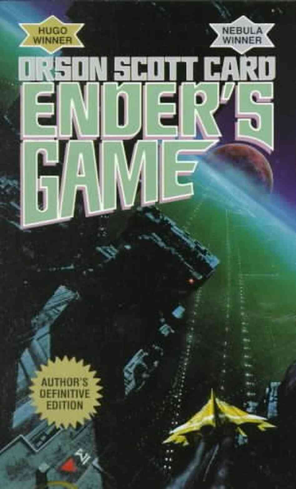

Ender's Game
Orson Scott
Published: January 1985
324 pages
In the future, humanity has mastered interplanetary spaceflight and as they explore the galaxy, they encounter an insect-like alien race called the Formics. After discovering a Formic base on asteroid Eros, war breaks out between the humans and Formics. The humans achieve a narrow victory, but fearing future threats of a Formic invasion, create the International Fleet (I.F.) and train gifted children to become commanders at their orbiting Battle School.